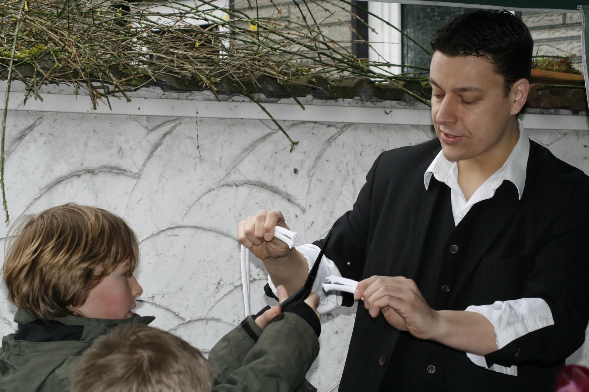

Haltern am See ist ein beliebter Ausflugsort – und ein fester Teil meines Einsatzgebiets. Hier sorge ich mit Kinderzauberei, Zaubershow und Close-up für Highlights bei Festen und Feiern rund um den Stausee.
Als Zauberer LIAR – Michaël Prescler aus Gladbeck – bringe ich seit über 15 Jahren elegante Zauberkunst mit französischem Charme nach Haltern am See. Ob Kindergeburtstage, Sommer- und Seefeste, Hochzeiten und Vereinsfeste: jede Show wird individuell auf Ihren Anlass und Ihr Publikum abgestimmt.
Meine Stärke ist die Interaktion – Ihre Gäste schauen nicht nur zu, sie werden Teil der Magie. Von Gladbeck aus bin ich in rund 25 Minuten in Haltern und den Stadtteilen wie die Seestadt, Sythen, Flaesheim und Lippramsdorf bei Ihnen.
Ich arbeite ohne große Technik: Für die Bühnenshow genügen rund 2×2 Meter Platz und etwa 10 Minuten Aufbauzeit – drinnen wie draußen. So wird Ihr Event in Haltern am See unkompliziert zum Highlight.

Interaktive Kinderzaubershow (ca. 40 Min.) für Geburtstage, Kitas & Schulen in Haltern – jedes Kind wird selbst zum Zauberer. Mehr erfahren →
Magie hautnah an den Tischen Ihrer Gäste – ideal für Hochzeiten, Galadinner & Firmenfeiern. Mehr erfahren →
Mitreißende Zaubershow mit Comedy & Illusion für Betriebsfeiern, Galas & Stadtfeste. Mehr erfahren →
Mobile Magie mitten unter den Gästen – perfekt für Messen, Sommerfeste & Empfänge in Haltern am See. Mehr erfahren →
Routiniert, herzlich und immer mit frischer Begeisterung – das schätzen meine Kundinnen und Kunden in Haltern am See und im ganzen Ruhrgebiet.
Er erschien super pünktlich und zog alle Gäste, insbesondere die Kinder, in seinen Bann. Außerordentlich zufrieden – uneingeschränkt zu empfehlen!
Ein außergewöhnlich guter Künstler, der es versteht, seine Gäste – egal ob jung oder alt – zu verzaubern. Wärmstens zu empfehlen!
Super sympathischer Zauberer, der sein Publikum in jedem Alter unterhält und zum Staunen bringt. Nur weiterzuempfehlen.
Im Ruhrgebiet und am Niederrhein bin ich in vielen Städten zu Gast. Eine Auswahl in der Nähe von Haltern am See:
Rufen Sie direkt an oder schreiben Sie mir – ich melde mich schnell mit einem unverbindlichen Angebot für Ihr Event in Haltern am See.